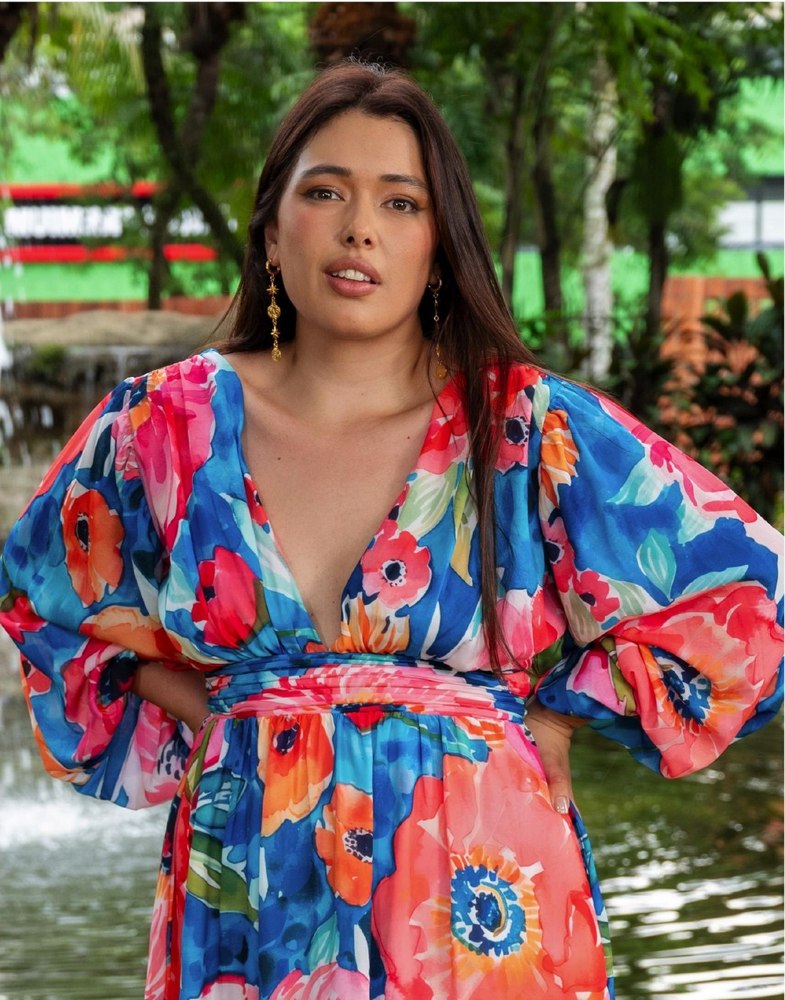

Trabajo seleccionado
Proyectos recientes.
Una muestra de identidades de marca, campañas y piezas editoriales que he desarrollado para empresas, entidades públicas y emprendimientos.
Diseño + comunicación
Diseñadora gráfica y comunicadora social. Identidad de marca, diseño editorial y contenido digital.
Branding · Diseño editorial · Contenido digital · Comunicación institucional · UX/UI

Trabajo seleccionado
Una muestra de identidades de marca, campañas y piezas editoriales que he desarrollado para empresas, entidades públicas y emprendimientos.
Cómo trabajo
Diseño acompañado de estrategia, para marcas que quieren crecer con coherencia.
Cada pieza responde a un objetivo de marca, no solo a una tendencia visual.
Comunico ideas complejas de forma simple, tanto en el diseño como en el texto.
Integro diseño, comunicación y experiencia de usuario alrededor de quien recibe el mensaje.
Desde el concepto de marca hasta la pieza final lista para imprimir o publicar.